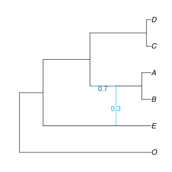
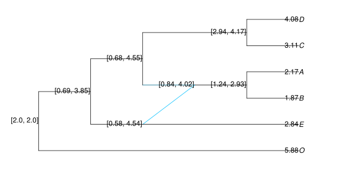
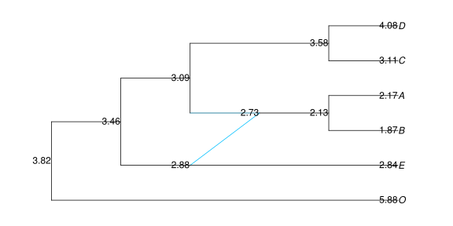
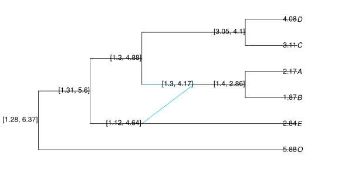
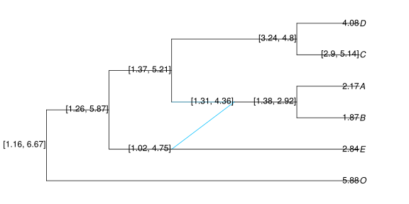
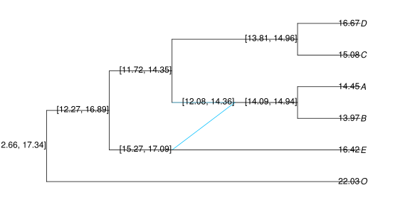
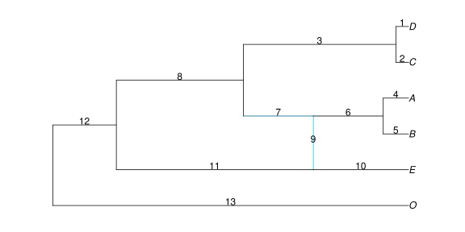

Continuous Trait Evolution
Once the network is inferred, we can take these species relationships into account when studying the distribution of quantitative traits measured for extant species. This is the goal of phylogenetic comparative methods (PCM). More details can be found on the developments below in Bastide et al. 20181
We assume a fixed network, correctly rooted, with branch lengths proportional to calendar time. Here, we consider the true network that was used in the previous sections, and which is ultrametric (all the tips are contemporary).
truenet = readTopology("((((D:0.4,C:0.4):4.8,((A:0.8,B:0.8):2.2)#H1:2.2::0.7):4.0,(#H1:0::0.3,E:3.0):6.2):2.0,O:11.2);");
As previously, we can plot the network thanks to the RCall package. The name function is only instrumental here, to ensure that the figure is saved in the correct directory when the documentation is built. We only show the commands to actually save the plot in this first example for the interested reader, but we will hide those in the rest of the chapter, for the sake of clarity.
using PhyloPlots, RCall R"name <- function(x) file.path('..', 'assets', 'figures', x)" R"svg(name('truenet.svg'), width=8, height=4)" R"par(mar = c(0, 0, 0, 0))" plot(truenet, :R, useEdgeLength=true, showGamma=true); R"dev.off()"

Model and Variance Matrix
Assuming that the network is known and that the continuous traits evolve like a Brownian Motion (BM) in time, it is possible to compute the expected variance covariance matrix between tip measurements. This can be done using function vcv, whose syntax is inspired from the well known corresponding ape function.
C = vcv(truenet)
6×6 DataFrames.DataFrame │ Row │ D │ C │ A │ B │ E │ O │ ├─────┼──────┼──────┼───────┼───────┼──────┼──────┤ │ 1 │ 11.2 │ 10.8 │ 4.8 │ 4.8 │ 2.0 │ 0.0 │ │ 2 │ 10.8 │ 11.2 │ 4.8 │ 4.8 │ 2.0 │ 0.0 │ │ 3 │ 4.8 │ 4.8 │ 8.596 │ 7.796 │ 3.86 │ 0.0 │ │ 4 │ 4.8 │ 4.8 │ 7.796 │ 8.596 │ 3.86 │ 0.0 │ │ 5 │ 2.0 │ 2.0 │ 3.86 │ 3.86 │ 11.2 │ 0.0 │ │ 6 │ 0.0 │ 0.0 │ 0.0 │ 0.0 │ 0.0 │ 11.2 │
The matrix is returned as a DataFrame, with columns named by the tips of the network to allow for easy identification.
The computation of this matrix is based on the more general function sharedPathMatrix. It is at the core of all the Phylogenetic Comparative Methods described below.
Trait simulation
We start by generating continuous traits to study. We simulate three traits on the network (two independent, one dependent), using a Brownian Motion (BM) model of trait evolution on the network. We start by choosing the parameters of the BM (ancestral mean and variance), by creating objects of class ParamsBM<:ParamsProcess.
params_trait1 = ParamsBM( 2, 0.5) # BM with mean 2 and variance 0.5 params_trait2 = ParamsBM(-2, 1) # BM with mean -2 and variance 1.0
We then simulate the independent traits according to these parameters, using function simulate (fixing the seed, for reproducibility).
srand(18480224); sim1 = simulate(truenet, params_trait1) # simulate a BM on truenet sim2 = simulate(truenet, params_trait2)
This creates objects of class TraitSimulation, from which we can extract the data at the tips, thanks to the method getindex(::TraitSimulation, ::Symbol).
trait1 = sim1[:Tips] # trait 1 at the tips (data) trait2 = sim2[:Tips]
This extractor creates an Array with one column, and as many lines as the number of tips there are in the phylogeny. It is sorted in the same order as the tips of the phylogeny used to simulate it. If needed, we could also extract the simulated values at the internal nodes in the network:
sim1[:InternalNodes]
Finally, we generate the last trait correlated with trait 1 (but not trait 2), with phylogenetic noise.
srand(18700904); noise = simulate(truenet, ParamsBM(0, 0.1)) # phylogenetic residuals trait3 = 10 + 2 * trait1 + noise[:Tips] # trait to study. independent of trait2
Phylogenetic regression
Assume that we measured the three traits above, and that we wanted to study the impact of traits 1 and 2 on trait 3. To do that, we can perform a phylogenetic regression.
In order to avoid confusion, the function takes in a DataFrame, that has an extra column with the names of the tips of the network, labeled tipNames. Here, we generated the traits ourselves, so they are all in the same order.
using DataFrames dat = DataFrame(trait1 = trait1, trait2 = trait2, trait3 = trait3, tipNames = tipLabels(sim1))
6×4 DataFrames.DataFrame │ Row │ trait1 │ trait2 │ trait3 │ tipNames │ ├─────┼─────────┼──────────┼─────────┼──────────┤ │ 1 │ 4.08298 │ -7.34186 │ 16.673 │ D │ │ 2 │ 3.10782 │ -7.45085 │ 15.0831 │ C │ │ 3 │ 2.17078 │ -3.32538 │ 14.4522 │ A │ │ 4 │ 1.87333 │ -4.26472 │ 13.9712 │ B │ │ 5 │ 2.8445 │ -5.96857 │ 16.417 │ E │ │ 6 │ 5.88204 │ -1.99388 │ 22.0269 │ O │
Phylogenetic regression / ANOVA is based on the GLM package, with the network as an extra argument, using function phyloNetworklm.
using StatsModels # for statistical model formulas fitTrait3 = phyloNetworklm(@formula(trait3 ~ trait1 + trait2), dat, truenet)
StatsModels.DataFrameRegressionModel{PhyloNetworks.PhyloNetworkLinearModel,Array{Float64,2}}
Formula: trait3 ~ 1 + trait1 + trait2
Model: BM
Parameter(s) Estimates:
Sigma2: 0.034712
Coefficients:
Estimate Std.Error t value Pr(>|t|)
(Intercept) 11.9564 1.15462 10.3552 0.0019
trait1 1.69111 0.183047 9.23868 0.0027
trait2 0.170664 0.155645 1.0965 0.3530
Log Likelihood: -2.9851753461
AIC: 13.9703506922
From this, we can see that the intercept, the coefficient for trait 1 and the variance of the noise are correctly estimated (given that there are only 6 taxa). In addition, the Student T test for the coefficient associated with trait 2 has a high p-value, which means that this coefficient is not significantly different from 0. This is consistent with the way we simulated trait 3.
The function returns an object of type PhyloNetworkLinearModel<:LinPredModel. It is a subtype of the GLM type LinPredModel, which means that all base functions from Julia StatsBase can be applied to it. See the documentation for this type for a list of all functions that can be used. Some functions allow the user to retrieve directly the estimated parameters of the BM, and are specific to this object.
julia> sigma2_estim(fitTrait3) # estimated variance of the BM 0.03471195929806232 julia> mu_estim(fitTrait3) # estimated root value of the BM 11.956367929622969
Ancestral State Reconstruction
From known parameters
If we assume that we know the exact model of evolution that generated the traits, we can do ancestral trait reconstruction. Here, we simulated trait 1 ourselves, so we can use the true process, with the true parameters. In other words, we can reconstruct the state at the internal nodes, given the values at the tips, the known value at the root and the known BM variance.
ancTrait1 = ancestralStateReconstruction(truenet, trait1, params_trait1)
Function ancestralStateReconstruction creates an object with type ReconstructedStates. Several extractors can be applied to it:
julia> expectations(ancTrait1) # predictions
13×2 DataFrames.DataFrame
│ Row │ nodeNumber │ condExpectation │
├─────┼────────────┼─────────────────┤
│ 1 │ -5 │ 3.55615 │
│ 2 │ -7 │ 2.08473 │
│ 3 │ 5 │ 2.42943 │
│ 4 │ -4 │ 2.61415 │
│ 5 │ -8 │ 2.56143 │
│ 6 │ -3 │ 2.26785 │
│ 7 │ -2 │ 2.0 │
│ 8 │ 1 │ 4.08298 │
│ 9 │ 2 │ 3.10782 │
│ 10 │ 3 │ 2.17078 │
│ 11 │ 4 │ 1.87333 │
│ 12 │ 6 │ 2.8445 │
│ 13 │ 7 │ 5.88204 │
julia> using StatsBase # for stderror(), aic(), likelihood() etc.
julia> stderror(ancTrait1) # associated standard errors
7-element Array{Float64,1}:
0.312339
0.429933
0.812157
0.985996
1.00992
0.807042
0.0
julia> predint(ancTrait1, level=0.9) # prediction interval (with level 90%)
13×2 Array{Float64,2}:
3.0424 4.0699
1.37755 2.79191
1.09355 3.76531
0.992327 4.23596
0.90026 4.2226
0.940384 3.59532
2.0 2.0
4.08298 4.08298
3.10782 3.10782
2.17078 2.17078
1.87333 1.87333
2.8445 2.8445
5.88204 5.88204
We can plot the ancestral states or prediction intervals on the tree, using the nodeLabel argument of the plot function.
ancExpe = expectationsPlot(ancTrait1); # format expected ancestral states for the plot plot(truenet, :R, nodeLabel = ancExpe);
ancInt = predintPlot(ancTrait1) # format the prediction intervals for the plot plot(truenet,:R, nodeLabel = ancInt);

The predint and predintPlot functions have an optional argument to state the level of the prediction interval. If not given, the default value is 0.95.
It is also possible to plot both the reconstructed state and the predicted value on the same plot, using the optional keyword argument withExp. As shown below, we could also use the :RCall method from the plot function.
plot(truenet, :R, nodeLabel = predintPlot(ancTrait1, withExp=true));
These plots tend to be quite busy, even for small networks.
As we know the true ancestral states here, we can compare them to our estimation.
predictions = DataFrame(infPred=predint(ancTrait1)[1:7, 1], trueValue=sim1[:InternalNodes], supPred=predint(ancTrait1)[1:7, 2])
7×3 DataFrames.DataFrame │ Row │ infPred │ trueValue │ supPred │ ├─────┼──────────┼───────────┼─────────┤ │ 1 │ 2.94398 │ 2.74233 │ 4.16832 │ │ 2 │ 1.24207 │ 2.24355 │ 2.92738 │ │ 3 │ 0.837628 │ 1.38334 │ 4.02123 │ │ 4 │ 0.681629 │ 1.50076 │ 4.54666 │ │ 5 │ 0.582023 │ 2.84188 │ 4.54084 │ │ 6 │ 0.686076 │ 1.76745 │ 3.84962 │ │ 7 │ 2.0 │ 2.0 │ 2.0 │
From estimated parameters
In real applications though, we do not have access to the true parameters of the process that generated the data. We can estimate it using the previous function. To fit a regular BM, we just need to do a regression of trait 1 against a simple intercept:
fitTrait1 = phyloNetworklm(@formula(trait1 ~ 1), dat, truenet)
We can then apply the ancestralStateReconstruction function directly to the fitted object:
ancTrait1Approx = ancestralStateReconstruction(fitTrait1)
WARNING: These prediction intervals show uncertainty in ancestral values, assuming that the estimated variance rate of evolution is correct. Additional uncertainty in the estimation of this variance rate is ignored, so prediction intervals should be larger.
The prediction intervals ignore the fact that we estimated the process parameters, so they are less accurate and the function throws a warning. The output is an object of the same ReconstructedStates type as earlier, and the same extractors can be applied to it:
plot(truenet, :R, nodeLabel = expectationsPlot(ancTrait1Approx));

For convenience, the two steps described above (fitting against the intercept, and then do ancestral state reconstruction) can be done all at once with a single call of the function ancestralStateReconstruction on a DataFrame with the trait to reconstruct, and the tip labels:
datTrait1 = DataFrame(trait1 = trait1, tipNames = tipLabels(sim1)) ancTrait1Approx = ancestralStateReconstruction(datTrait1, truenet)
WARNING: These prediction intervals show uncertainty in ancestral values, assuming that the estimated variance rate of evolution is correct. Additional uncertainty in the estimation of this variance rate is ignored, so prediction intervals should be larger.
plot(truenet, :R, nodeLabel = predintPlot(ancTrait1Approx, level=0.9));

This produces the exact same results. Here, we chose a level of 90% for the plotted prediction intervals.
Data imputation
Note that there is no theoretical difference between an internal node, for which we could not measure the value of the trait, and a missing value at a tip of the network. Consequently, the previous ancestralStateReconstruction function can be used to do data imputation. To see this, let's add some missing values in trait 1.
datTrait1[:trait1] = allowmissing(datTrait1[:trait1]); datTrait1[[2], :trait1] = missing; # second row: for taxon C ancTrait1Approx = ancestralStateReconstruction(datTrait1, truenet)
WARNING: These prediction intervals show uncertainty in ancestral values, assuming that the estimated variance rate of evolution is correct. Additional uncertainty in the estimation of this variance rate is ignored, so prediction intervals should be larger.
plot(truenet, :R, nodeLabel = predintPlot(ancTrait1Approx));

A prediction interval is shown for the missing values.
With known predictors
At this point, it might be tempting to apply this function to trait 3 we simulated earlier as a linear combination of trait 1 and a phylogenetic noise. However, this cannot be done directly:
ancTrait3 = ancestralStateReconstruction(fitTrait3) # Throws an error !
This is because the model we used to fit the trait (a regression with one predictor and an intercept) is not compatible with the simple model of Brownian evolution that we assumed for the ancestral state reconstruction. As the predictor used is not known for ancestral states, it is not possible to reconstruct the trait for this particular model.
The only option we have is to provide the function with the predictor's ancestral states, if they are known. They are known indeed in this toy example that we generated ourselves, so we can reconstruct our trait doing the following:
ancTrait3 = ancestralStateReconstruction(fitTrait3, [ones(7, 1) sim1[:InternalNodes] sim2[:InternalNodes]])
WARNING: These prediction intervals show uncertainty in ancestral values, assuming that the estimated variance rate of evolution is correct. Additional uncertainty in the estimation of this variance rate is ignored, so prediction intervals should be larger.
plot(truenet, :R, nodeLabel = predintPlot(ancTrait3));

where we provided the ancestral predictors as a matrix, containing the intercept, and the known predictor at the nodes. The user must be very careful with this function, as no check is done for the order of the predictors, that must be in the same order as the internal nodes of the phylogeny. As ancestral predictors are often unknown, the use of this functionality is discouraged.
Phylogenetic ANOVA
The phyloNetworklm function is based on the lm function from GLM. This means that it inherits from most of its features, and in particular, it can handle formulas with factors or interactions. For example, in lizards, we might want to do a regression of toe length against body length and the region where each species is found, where this region is coded into 4 categories (say). We might also want to include an interaction effect between body length and region. (This model has no biological basis. It is just meant to show the possibilities of the function).
To illustrate the use of categorical predictors of particular interest in a network with reticulations, let's assume that some transgressive evolution took place after the hybridization event, so that tips "A" and "B" have larger mean compared to the others.
delta = 5.0; # value of heterosis underHyb = [(n == "A" || n == "B") for n in tipLabels(sim1)] # tips under hybrid underHyb for i in 1:length(trait3) underHyb[i] && (trait3[i]+=delta) # add delta to tips A and B end
julia> trait3 # changed: +5 was added by the previous loop to A and B
6-element Array{Float64,1}:
16.673
15.0831
19.4522
18.9712
16.417
22.0269
The categorical variable underHyb separates tips "A" and "B" from the others. We need to mark it as a factor, not a numerical variable, i.e. as a PooledDataArray.
dat = DataFrame(trait1 = trait1, trait2 = trait2, trait3 = trait3, underHyb = underHyb, tipNames = tipLabels(sim1)) categorical!(dat, :underHyb)
julia> dat 6×5 DataFrames.DataFrame │ Row │ trait1 │ trait2 │ trait3 │ underHyb │ tipNames │ ├─────┼─────────┼──────────┼─────────┼──────────┼──────────┤ │ 1 │ 4.08298 │ -7.34186 │ 16.673 │ false │ D │ │ 2 │ 3.10782 │ -7.45085 │ 15.0831 │ false │ C │ │ 3 │ 2.17078 │ -3.32538 │ 19.4522 │ true │ A │ │ 4 │ 1.87333 │ -4.26472 │ 18.9712 │ true │ B │ │ 5 │ 2.8445 │ -5.96857 │ 16.417 │ false │ E │ │ 6 │ 5.88204 │ -1.99388 │ 22.0269 │ false │ O │
Now we can include this factor in the regression.
fitTrait = phyloNetworklm(@formula(trait3 ~ trait1 + underHyb), dat, truenet)
StatsModels.DataFrameRegressionModel{PhyloNetworks.PhyloNetworkLinearModel,Array{Float64,2}}
Formula: trait3 ~ 1 + trait1 + underHyb
Model: BM
Parameter(s) Estimates:
Sigma2: 0.0484988
Coefficients:
Estimate Std.Error t value Pr(>|t|)
(Intercept) 11.0616 1.19414 9.26324 0.0027
trait1 1.72504 0.240787 7.16418 0.0056
underHyb: true 5.07354 0.837326 6.05922 0.0090
Log Likelihood: -3.9885372687
AIC: 15.9770745374
In this case, the categorical variable indicating which tips are descendants of the reticulation event is indeed relevant, and the transgressive evolution effect is recovered.
This is a very simple example of how to include transgressive evolution, but some general functions to test for it, on networks with more than on hybrid, are also available.
Pagel's Lambda
One classical question about trait evolution is the amount of "phylogenetic signal" in a dataset, that is, the importance of the tree structure to explain variation in the observed traits. One way of doing measuring that is to use Pagel's lambda2 transformation of the branch lengths. This model assumes a BM on a tree where the internal branches are multiplied by a factor λ, while the external branches are modified so that the total height of the tree is constant. Hence, λ varies between 0 (the tree has no influence on the data) and 1 (the tree is unchanged). Using the same branch length transformations, this model can be straightforwardly extended to phylogenetic networks.
We can illustrate this with the predictor trait we used earlier. We use the same function as before, only indicating the model we want to use:
fitPagel = phyloNetworklm(@formula(trait1 ~ 1), dat, truenet, model="lambda")
INFO: Maximum lambda value to maintain positive branch lengths: 1.036 StatsModels.DataFrameRegressionModel{PhyloNetworks.PhyloNetworkLinearModel,Array{Float64,2}} Formula: trait1 ~ +1 Model: lambda Parameter(s) Estimates: Sigma2: 0.204079 Lambda: 0.907356 Coefficients: Estimate Std.Error t value Pr(>|t|) (Intercept) 3.78438 0.946551 3.99808 0.0103 Log Likelihood: -9.3167221118 AIC: 24.6334442235
As it is indeed generated according to a plain BM on the phylogeny, the estimated λ should be close to 1. It can be extracted with function lambda_estim:
julia> lambda_estim(fitPagel) 0.9073561228984233
Shifts and transgressive evolution
In the ANOVA section above, we showed how to include transgressive evolution in a simple case. In general, transgressive evolution can be seen as a particular example of a shifted BM on the phylogenetic network.
Simulation of a Shifted BM
In a shifted BM, the trait evolves as a BM on the network most of the time, but shifts on some of the branches. The positions and values of the shifts can be stored in a ShiftNet object. For identifiability reasons, shifts are only allowed on tree-like branches. The position of the shifts can be given using vector of edges. To see this, let's first plot the network with its associated edges and node numbers.
plot(truenet, :R, useEdgeLength=true, showEdgeNumber=true);

Let's say that we want to add a shift with value 5.0 on the branch directly following the hybridization event, in order to model transgressive evolution. We can see on the plot above that this branch is number 6, so we define the following object:
shift = ShiftNet(truenet.edge[6], 5.0, truenet)
Note that the edge numbers and values of a ShiftNet object can be retrieved thanks to functions getShiftEdgeNumber and getShiftValue. The constructor can take a single edge and associated value, like here, or two vectors of edges and matching values.
Because we often need to put shifts only on edges right after hybrids, there is a special function shiftHybrid to do that, so that we do not have to find out their edges number. Here, the shift object could hence have been defined as:
shift = shiftHybrid(5.0, truenet)
PhyloNetworks.ShiftNet:
Edge Number Shift Value
6.0 5.0
The parameters for the simulation are then defined as above, just adding the ShiftNet object as a parameter.
params_sh = ParamsBM(2, 0.5, shift) # BM with mean 2, variance 0.5, and shifts.
The traits are simulated using the same function simulate, and extracted at the tips as before.
srand(18700904) sim_sh = simulate(truenet, params_sh) # simulate a shifted BM on truenet trait_sh = sim_sh[:Tips] # trait at the tips (data)
Fit of a Shifted BM
Let's assume that we measured trait_sh, and that we want to test whether there were some ancestral hybridizations. To do that, we can use the custom columns of the descendenceMatrix, that can be directly defined thanks to function regressorHybrid.
df_shift = regressorHybrid(truenet) # Regressors matching Hybrid Shifts
This creates a dataframe, with as many columns as the number of hybrids in the network, each named according to the number of the edge after the hybrid. We can use this dataframe as regressors in the phyloNetworklm function.
dat = DataFrame(trait = trait_sh, tipNames = tipLabels(sim_sh)) # Data dat = join(dat, df_shift, on=:tipNames) # join the two fit_sh = phyloNetworklm(@formula(trait ~ shift_6), dat, truenet) # fit
StatsModels.DataFrameRegressionModel{PhyloNetworks.PhyloNetworkLinearModel,Array{Float64,2}}
Formula: trait ~ 1 + shift_6
Model: BM
Parameter(s) Estimates:
Sigma2: 0.347898
Coefficients:
Estimate Std.Error t value Pr(>|t|)
(Intercept) 1.7885 1.46856 1.21786 0.2902
shift_6 6.13121 1.73228 3.53939 0.0240
Log Likelihood: -9.8996497316
AIC: 25.7992994631
Here, because there is only one hybrid in the network, we can directly see whether the ancestral transgressive evolution is significant or not thanks to the Student T test on the coefficient associated with shift_6. In more complex cases, it is possible to do a Fisher F test, thanks to the GLM function ftest.
fit_null = phyloNetworklm(@formula(trait ~ 1), dat, truenet) # fit against the null (no shift) ftest(fit_sh, fit_null) # nested models, from more complex to most simple
Res. DOF DOF ΔDOF SSR ΔSSR R² ΔR² F* p(>F) Model 1 4 3 2.0874 0.6994 Model 2 5 2 -1 8.6247 -6.5373 -0.2419 0.9413 12.5272 0.0240
Here, this test is equivalent to the Fisher F test, and gives the same p-value.
Note that, for conventional reasons, the ftest function always takes the most complex model as the first one. This means that, in the table of results, the models are actually named in a reverse order, so that "Model 2" is actually our model under H0 (null model), and "Model 1" the one under H1 (model with shifts).
-
Bastide, Solís-Lemus, Kriebel, Sparks, Ané (2018): Phylogenetic Comparative Methods for Phylogenetic Networks with Reticulations. Systematic Biology 67(5):800–820. doi:10.1093/sysbio/syy033 ↩
-
Pagel M (1999). Inferring the historical patterns of biological evolution. Nature. 401: 877–884. doi:10.1038/44766 ↩